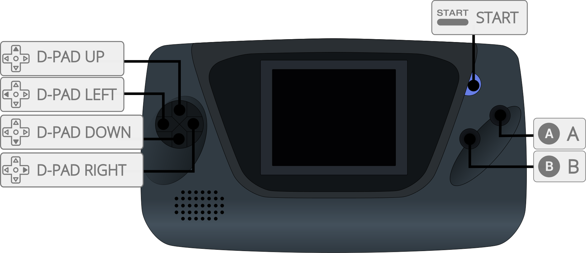
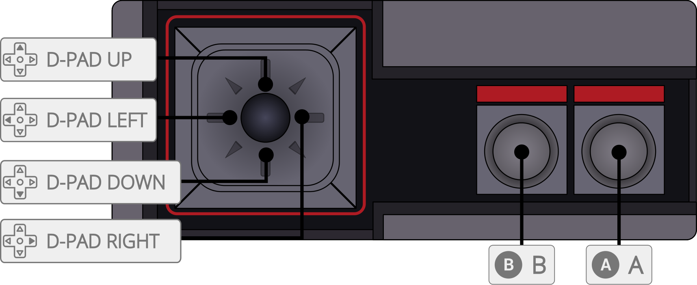
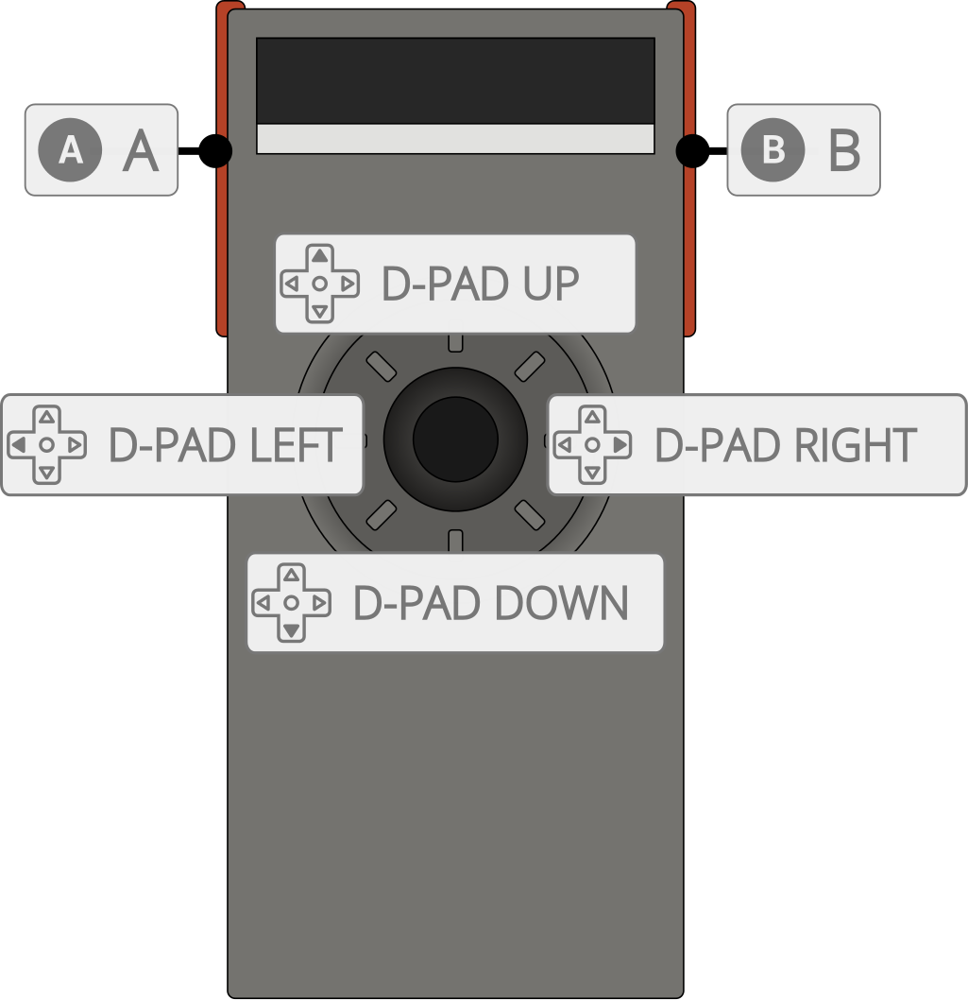

Gearsystem is an open source, cross-platform, Sega Master System / Game Gear / SG-1000 / Othello Multivision emulator written in C++.
The Gearsystem core has been authored by
The Gearsystem core is licensed under
A summary of the licenses behind RetroArch and its cores can be found here.
Gearsystem does not require BIOS (bootrom) files to work but they can be used optionally.
When the BIOS is enabled it will execute as in original hardware, causing invalid roms to lock or preventing them to boot, depending on the BIOS file and rom region and system. If you experience issues disable the BIOS.
Required or optional firmware files go in the frontend's system directory.
!!! attention If you’d like to use any BIOS, you can place the following files in RetroArch's system directory. Then, you need to enable Master System BIOS and/or Game Gear BIOS core options for these BIOS files to be used.
| Filename | Description | md5sum |
|---|---|---|
| bios.sms | Master System BIOS - Optional | 840481177270d5642a14ca71ee72844c |
| bios.gg | Game Gear BIOS - Optional | 672e104c3be3a238301aceffc3b23fd6 |
Content that can be loaded by the Gearsystem core have the following file extensions:
RetroArch database(s) that are associated with the Gearsystem core:
Frontend-level settings or features that the Gearsystem core respects.
| Feature | Supported |
|---|---|
| Restart | ✔ |
| Screenshots | ✔ |
| Saves | ✔ |
| States | ✔ |
| Rewind | ✔ |
| Netplay | ✕ |
| Core Options | ✔ |
| RetroAchievements | ✔ |
| RetroArch Cheats - Game Genie | ✔ |
| RetroArch Cheats - Pro Acion Replay | ✔ |
| Native Cheats | ✕ |
| Controls | ✔ |
| Remapping | ✔ |
| Multi-Mouse | ✕ |
| Rumble | ✕ |
| Sensors | ✕ |
| Camera | ✕ |
| Location | ✕ |
| Subsystem | ✕ |
| Softpatching | ✔ |
| Disk Control | ✕ |
| Username | ✕ |
| Language | ✕ |
| Crop Overscan | ✕ |
| LEDs | ✕ |
The Gearsystem core's library name is 'Gearsystem'
The Gearsystem core saves/loads to/from these directories.
Frontend's Save directory
| File | Description |
|---|---|
| *.srm | Cartridge battery save |
Frontend's State directory
| File | Description |
|---|---|
| *.state# | State |
The Gearsystem core has the following options that can be tweaked from the core options menu. The default setting is bolded.
Settings with (Restart) means that core has to be closed for the new setting to be applied on next launch.
System (restart) [gearsystem_system] (Auto|Master System / Mark III|Game Gear|SG-1000 / Multivision)
Select which hardware/model is emulated.
Region (restart) [gearsystem_region] (Auto|Master System Japan|Master System Export|Game Gear Japan|Game Gear Export|Game Gear International)
Select which region is emulated.
Mapper (restart) [gearsystem_mapper] (Auto|ROM|SEGA|Codemasters|Korean|SG-1000)
Select which mapper (memory bank controller) is emulated.
Refresh Rate (restart) [gearsystem_timing] (Auto|NTSC (60 Hz)|PAL (50 Hz))
Select which refresh rate will be used in emulation.
Master System BIOS (restart) [gearsystem_bios_sms] (Disabled|Enabled)
This option will enable/disable BIOS for Master System / Mark III models. For this to work, the bios.sms file must exist in the Retro Arch's system directory.
Game Gear BIOS (restart) [gearsystem_bios_gg] (Disabled|Enabled)
This option will enable/disable BIOS for Game Gear model. For this to work, the bios.gg file must exist in the Retro Arch's system directory.
3D Glasses [gearsystem_glasses] (Both Eyes / OFF|Left Eye|Right Eye)
For games with 3D glasses support this option will let you choose to display only left or right eye.
Allow Up+Down / Left+Right [gearsystem_up_down_allowed] (Disabled|Enabled)
Enabling this will allow pressing / quickly alternating / holding both left and right (or up and down in some games) directions at the same time.
This may cause movement based glitches to occur in certain games.
It's best to keep this core option disabled.



| User 1 input descriptors | RetroPad Inputs |
|---|---|
| 1 | |
| Start | |
| Up | |
| Down | |
| Left | |
| Right | |
| 2 | |